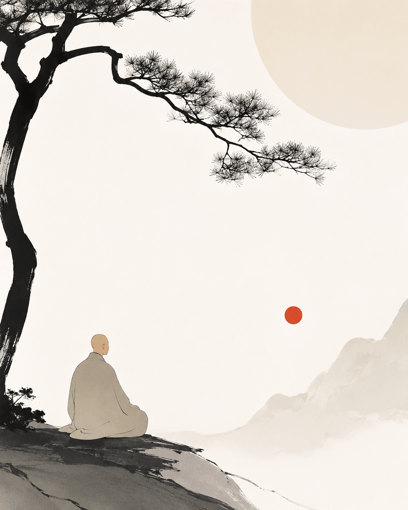

唐州有一僧，久住山中，昼则种菜，夜则读经。三十年间，未尝下山。一日，闻邻寺传言：“某禅师得大悟，诸方称善。”
僧闻之，心中忽生一念：
“我终日在此，究竟悟了没有？”
自此以后，种菜时也想，担水时也想，坐禅时也想。
春去秋来，竟成心病。
一夜月明。
僧独坐松下，自言自语：“若悟是何物？”
恰有老樵负柴经过。
樵夫闻之，大笑。
僧起身作礼：“敢问何故发笑？”
樵夫道：“我笑你问错了。”
僧曰：“如何是问错了？”
樵夫放下柴担，指着山中一株老松。
“你看那树。”
僧看。
樵夫问：“它可曾悟否？”
僧曰：“不曾。”
樵夫又问：“它可曾迷否？”
僧默然。
樵夫挑起柴担便走。
行数十步，回头道：“松风吹来时，它不迎；松风吹去时，它不送。你日日替自己添个悟字，又添个迷字，忙些什么？”
言罢径去。
僧独立月下。
山风忽起。
松涛四合。
其声满谷。
僧忽然忆起少年出家时，老和尚曾说：“饥来吃饭，困来眠。”
当时只当寻常话。
如今却如古钟撞破长夜。
次日清晨。
邻寺禅师遣人来请。
僧随往。
禅师问：“闻你昨夜有省。”
僧曰：“无省。”
禅师曰：“既无省，来此何为？”
僧拈起地上一片落叶，置于掌中。
良久。
吹去。
禅师点头。
众僧不解。
有学人问：“和尚，落叶何意？”
禅师曰：“春时生，秋时落。”
学人曰：“其中有何佛法？”
禅师曰：“你又添了一层。”
学人犹未会。
禅师遂喝：“昨夜松风吹遍山谷，谁曾向你说法来？”
学人茫然。
禅师拂袖而起。
后人因此公案，名曰《松风不识字》。
颂曰：
松风终日过前溪，
不识真如与菩提。
老树无心成古佛，
闲云有影落寒池。
欲寻玄旨添头角，
才立知见隔藩篱。
夜半月明山更静，
一声猿啸万峰低。